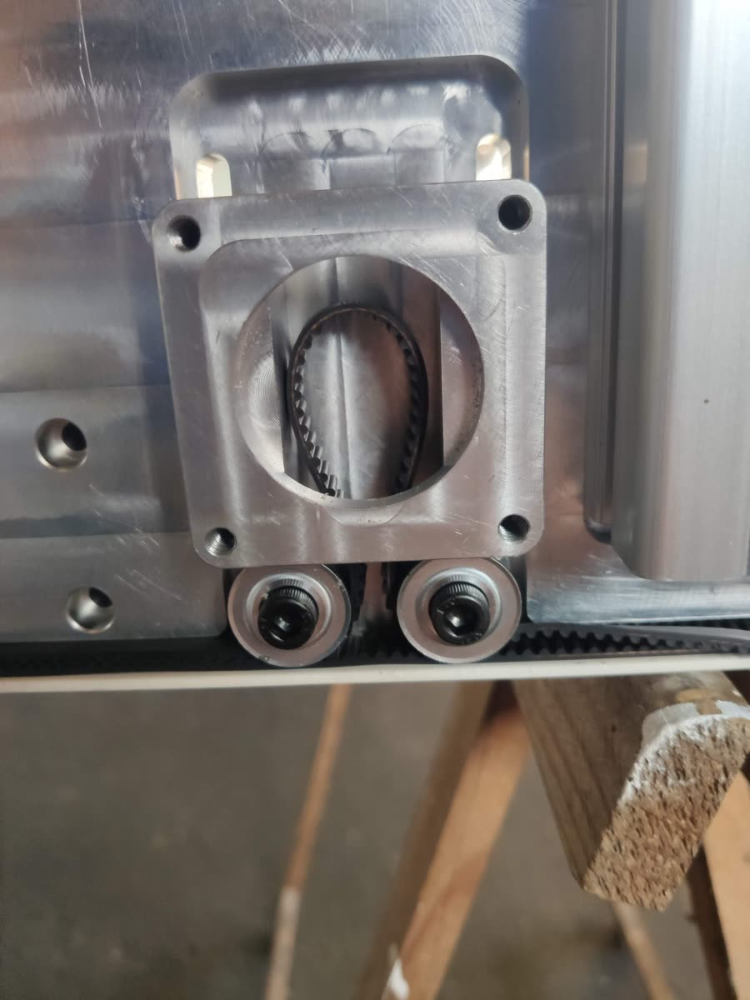

Skip to content
C. Provenaz
Projects
Experience
Skills
Contact
Back to projects
2022 – now
CNC router
In progress
Work area
1000 × 500 mm
Precision target
< 0.1 mm
Materials
Wood, soft metals
My work
Machining, CAD, electrical design, firmware
Photos and videos

#CAD
#Machining
Other projects
ETH Robotics Club
In-hand reorientation
Color-based sorting
Mr. Melon's Warpdrive
FlyForce
Robot vacuum
Solar-powered RC airplane
Electric drift trike
Forest winch
Mechanical keyboard
FPGA alarm clock
Site digitalization at Haleon